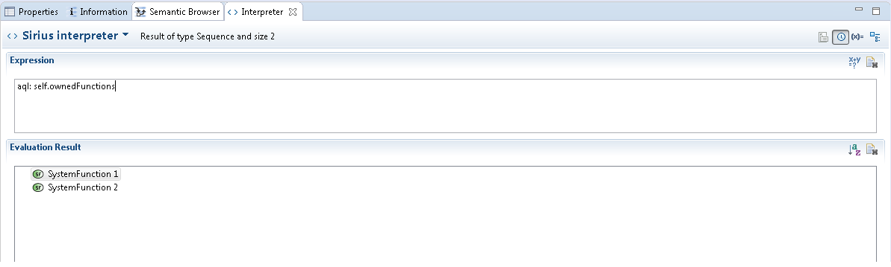

Using the Interpreter view (Window / Show View / Others... / Interpreter), you can write and evaluate queries on model elements using the AQL language.
Set it to 'Sirius interpreter' if not set by default and write queries in the 'Expression' .

The Interpreter view supports content assist to help you write queries (Ctrl + space).